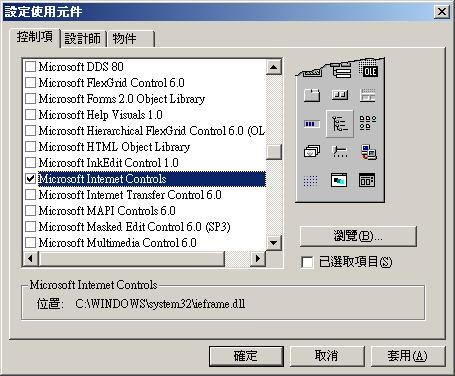
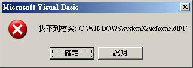
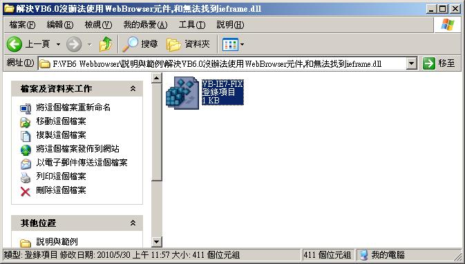
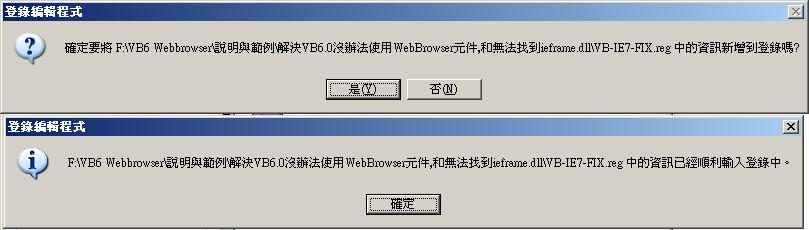

[Visual Basic 6.0] 利用 WebBrowser 寫 Html 網頁預覽器 (作者：廖憲得 0xde)
首先該如何叫出 WebBrowser 瀏覽器元件呢?

專案 => 設定使用元件 找到 "Microsoft Internet Controls" 打勾 => 確定

簡單的 WebBrowser 基礎程式碼
上一頁 WebBrowser1.GoBack
下一頁 WebBrowser1.GoForward
瀏覽網址 WebBrowser1.Navigate ("網址")
重新整理 WebBrowser1.Refresh
搜索 WebBrowser1.GoSearch
停止 WebBrowser1.Stop ※當出現錯誤訊息：(找不到檔: 'C:32.dll')

將以下 Code 用記事本填入，並另存新檔為 XXX.reg (登錄檔)
Windows Registry Editor Version 5.00
[HKEY_CLASSES_ROOT\TypeLib\{EAB22AC0-30C1-11CF-A7EB-0000C05BAE0B}]
[HKEY_CLASSES_ROOT\TypeLib\{EAB22AC0-30C1-11CF-A7EB-0000C05BAE0B}\1.1]
@="Microsoft Internet Controls"
[HKEY_CLASSES_ROOT\TypeLib\{EAB22AC0-30C1-11CF-A7EB-0000C05BAE0B}\1.1\0]
[HKEY_CLASSES_ROOT\TypeLib\{EAB22AC0-30C1-11CF-A7EB-0000C05BAE0B}\1.1\0\win32]
@="C:\\WINDOWS\\system32\\ieframe.dll"


登錄即可。

Html 網頁預覽器
Private Sub HtmlTxt_Change()
Open App.Path & "/Html.htm" For Output As #1
Print #1, HtmlTxt
WebBrowserHtml.Navigate App.Path & "/Html.htm"
Close
End Sub- 在表單上放置一個 WebBrowser 並且將它重新命名為 WebBrowserHtml
- 在表單上放置一個 TextBox 並且將它重新命名為 HtmlTxt
【本文作者為「廖憲得」，原文網址為： http://www.dotblogs.com.tw/0xde/archive/2013/11/12/127829.aspx ，由陳鍾誠編輯後納入本雜誌】